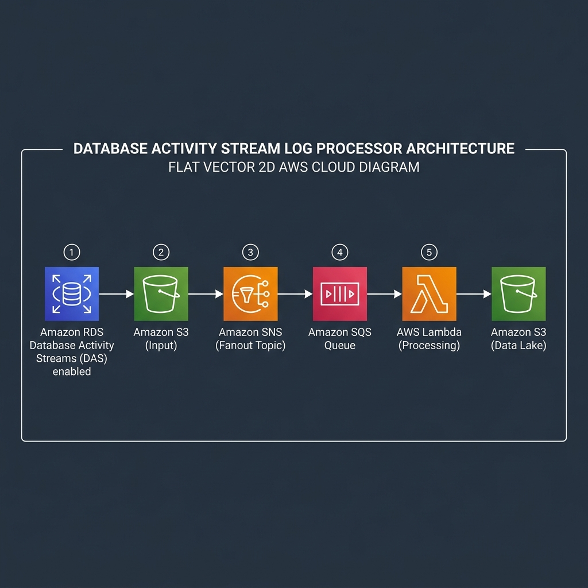

Database Activity Stream Processor
High-performance Go Lambda function that consumes AWS Database Activity Stream (DAS) events via SQS, decrypts payloads via AWS KMS, applies JSON DSL filtering, and exports the stream as Snappy-compressed Parquet files to S3.
Architecture Diagram
